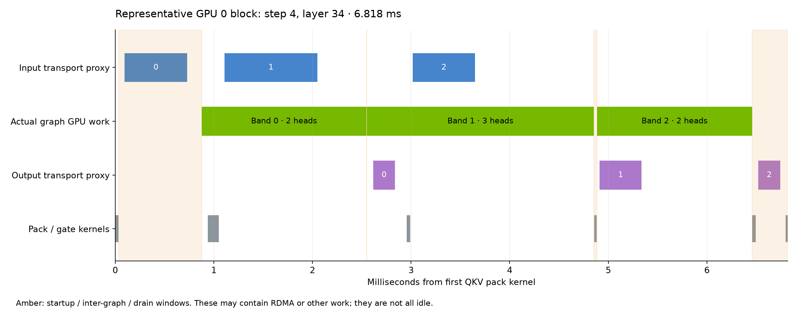
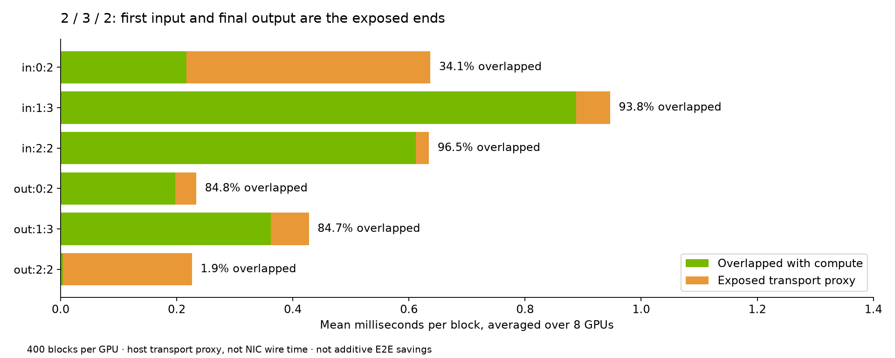

Current latency and remaining GPU work
Slide 18 final configuration: 960 × 544, 124 frames at 24 FPS (5.167 s), seed 43. Eight SM120 GPUs on the PRO 5000 reference node, PCIe with RDMA / IB. The project hardware label is retained; driver inventory reports “NVIDIA Graphics Device” and 73,415 MiB per GPU.
Configuration
| Inputs → output | 1344 × 768 reference image; 32 kHz stereo reference audio, 5.207 s → 960 × 544, 124 frames, 24 FPS. |
|---|---|
| Model / attention | Eight QAD evaluations; NVFP4 DiT; trained VSA; native FP4 attention. |
| Parallelism | Ulysses 8; encoder TP8; VAE tiles 8. RDMA direct layout with V / gate overlap; IB for remaining NCCL collectives. |
| Head execution | 2 / 3 / 2 bands; 1,200 compute CUDA Graph replays per rank, 66 nodes per replay. |
| Output | 36-layer NVFP4 VAE, 216 packed linears, BF16 autocast; MP4 pre-encoding. |
| AdaLN | 256 MiB exact projection cache; 366 hits and 42 misses per warmed request per rank; weights resident. |
Profiled request breakdown
| Rank 0 CPU NVTX envelope | Seconds |
|---|---|
| Text + vision encoder | 0.248476 |
| Reference image + audio encoder | 0.130270 |
| DiT · eight evaluations | 4.302397 |
| Decode + MP4 | 0.848131 |
| Other / request-boundary residual | 0.134281 |
These envelopes include waits. The 0.572 s VAE decoder is nested in Decode + MP4. Profiling overhead prevents substituting these numbers for the unprofiled median.
AdaLN weight staging is absent; layout work remains
| GPU 0 work inside DiT | GPU time | Interpretation |
|---|---|---|
| QKV pack / unpack + O-bundle | 158.872 ms | Identified layout kernels |
| Gate assembly | 32.705 ms | Includes arithmetic; counted separately |
| Device-to-device copies | 32.210 ms | 23.916 GB; not all attributed to layout |
| All host-to-device copies | 0.360 ms | 92 copies, 9.03 MB; no large AdaLN weight staging |
Cache misses still recompute projections. The trace lacks a dedicated AdaLN projection range, so that compute time is not separately attributed. GPU durations are already inside DiT; they are not additive E2E costs or guaranteed savings.
2 / 3 / 2: inspect startup and drain first
Across 3,200 block/rank samples in one request, the head window averages 6.926 ms. Startup averages 0.901 ms and drain 0.379 ms; mean gaps between band compute envelopes are 0.046 and 0.043 ms. These dependency windows may contain transport or GPU work.


First-input transport overlaps compute by about 34%; middle and last inputs overlap by about 94% and 96%. Final-output overlap is about 2%. This suggests testing narrower edge bands, but 1/4/2, 2/4/1 and 1/5/1 remain unmeasured. The retained runtime accepts only 2/3/2; a qualified source change is required.
Baseline and next measurement status
Slide 18 retains the historical 50-step BF16 baseline with default offload (247.956 s median). An improved BF16 baseline with resident/precomputed AdaLN is still pending; it must not be described as already optimized.
The lower-resolution screen stopped on disk quota exhaustion before inference. No 896 × 512, 864 × 480 or 800 × 448 timing is claimed in this release. The final measured 960 × 544 configuration still exceeds the sub-5 s target.